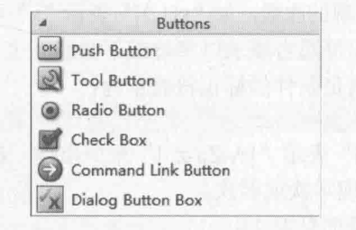

README
应用场景PC
Qt
/****************************************************************************
**
** Copyright (C) 2016 The Qt Company Ltd.
** Contact: https://www.qt.io/licensing/
**
** This file is part of the QtWidgets module of the Qt Toolkit.
**
** $QT_BEGIN_LICENSE:LGPL$
** Commercial License Usage
** Licensees holding valid commercial Qt licenses may use this file in
** accordance with the commercial license agreement provided with the
** Software or, alternatively, in accordance with the terms contained in
** a written agreement between you and The Qt Company. For licensing terms
** and conditions see https://www.qt.io/terms-conditions. For further
** information use the contact form at https://www.qt.io/contact-us.
**
** GNU Lesser General Public License Usage
** Alternatively, this file may be used under the terms of the GNU Lesser
** General Public License version 3 as published by the Free Software
** Foundation and appearing in the file LICENSE.LGPL3 included in the
** packaging of this file. Please review the following information to
** ensure the GNU Lesser General Public License version 3 requirements
** will be met: https://www.gnu.org/licenses/lgpl-3.0.html.
**
** GNU General Public License Usage
** Alternatively, this file may be used under the terms of the GNU
** General Public License version 2.0 or (at your option) the GNU General
** Public license version 3 or any later version approved by the KDE Free
** Qt Foundation. The licenses are as published by the Free Software
** Foundation and appearing in the file LICENSE.GPL2 and LICENSE.GPL3
** included in the packaging of this file. Please review the following
** information to ensure the GNU General Public License requirements will
** be met: https://www.gnu.org/licenses/gpl-2.0.html and
** https://www.gnu.org/licenses/gpl-3.0.html.
**
** $QT_END_LICENSE$
**
****************************************************************************/
Button
- Push Button
- Tool Button
- Radio Button
- Check Button
- Command Link Button
- Dialog Button Box

QPushButton
Header: #include
qmake: QT += widgets Inherits: QAbstractButton
Inherited By: QCommandLinkButton
#include <QtWidgets/qtwidgetsglobal.h>
#include <QtWidgets/qabstractbutton.h>
QT_REQUIRE_CONFIG(pushbutton);
QT_BEGIN_NAMESPACE
class QPushButtonPrivate; //d指针工具类 Pimpl
class QMenu;
class QStyleOptionButton;
// 继承了 QAbstractButton
class Q_WIDGETS_EXPORT QPushButton : public QAbstractButton
{
……
public:
explicit QPushButton(QWidget *parent = nullptr);//parent默认未空
explicit QPushButton(const QString &text, QWidget *parent = nullptr);
QPushButton(const QIcon& icon, const QString &text, QWidget *parent = nullptr);
~QPushButton();
QSize sizeHint() const override;
QSize minimumSizeHint() const override;
bool autoDefault() const;
void setAutoDefault(bool);
bool isDefault() const;
void setDefault(bool);
void setFlat(bool);
bool isFlat() const;
public Q_SLOTS:
#if QT_CONFIG(menu) // 如果链接了menu库
void showMenu();
#endif
protected:
bool event(QEvent *e) override;
void paintEvent(QPaintEvent *) override;
void keyPressEvent(QKeyEvent *) override;
void focusInEvent(QFocusEvent *) override;
void focusOutEvent(QFocusEvent *) override;
void initStyleOption(QStyleOptionButton *option) const;
QPushButton(QPushButtonPrivate &dd, QWidget* parent = nullptr);
public:
private:
Q_DISABLE_COPY(QPushButton)
Q_DECLARE_PRIVATE(QPushButton)
#if QT_CONFIG(menu)
Q_PRIVATE_SLOT(d_func(), void _q_popupPressed())
#endif
};
QT_END_NAMESPACE
QToolButton
Header: #include
qmake: QT += widgets
Inherits: QAbstractButton
注 ：Q_PROPERTY
#ifndef QTOOLBUTTON_H
#define QTOOLBUTTON_H
#include <QtWidgets/qtwidgetsglobal.h>
#include <QtWidgets/qabstractbutton.h>
QT_REQUIRE_CONFIG(toolbutton);
QT_BEGIN_NAMESPACE
class QToolButtonPrivate;
class QMenu;
class QStyleOptionToolButton; // Action样式
class Q_WIDGETS_EXPORT QToolButton : public QAbstractButton
{
Q_OBJECT
Q_ENUMS(Qt::ToolButtonStyle Qt::ArrowType)
#if QT_CONFIG(menu) // menu联动
Q_PROPERTY(ToolButtonPopupMode popupMode READ popupMode WRITE setPopupMode) // [qprop]
#endif
Q_PROPERTY(Qt::ToolButtonStyle toolButtonStyle READ toolButtonStyle WRITE setToolButtonStyle)
Q_PROPERTY(bool autoRaise READ autoRaise WRITE setAutoRaise)
Q_PROPERTY(Qt::ArrowType arrowType READ arrowType WRITE setArrowType)
public:
enum ToolButtonPopupMode {
DelayedPopup,
MenuButtonPopup,
InstantPopup
};
Q_ENUM(ToolButtonPopupMode)
explicit QToolButton(QWidget *parent = nullptr);
~QToolButton();
QSize sizeHint() const override;
QSize minimumSizeHint() const override;
Qt::ToolButtonStyle toolButtonStyle() const;
Qt::ArrowType arrowType() const;
void setArrowType(Qt::ArrowType type);
#if QT_CONFIG(menu)
void setMenu(QMenu* menu);
QMenu* menu() const;
void setPopupMode(ToolButtonPopupMode mode);
ToolButtonPopupMode popupMode() const;
#endif
QAction *defaultAction() const;
void setAutoRaise(bool enable);
bool autoRaise() const;
public Q_SLOTS:
#if QT_CONFIG(menu)
void showMenu();
#endif
void setToolButtonStyle(Qt::ToolButtonStyle style);
void setDefaultAction(QAction *);
Q_SIGNALS:
void triggered(QAction *);
protected:
bool event(QEvent *e) override;
void mousePressEvent(QMouseEvent *) override;
void mouseReleaseEvent(QMouseEvent *) override;
void paintEvent(QPaintEvent *) override;
void actionEvent(QActionEvent *) override;
void enterEvent(QEvent *) override;
void leaveEvent(QEvent *) override;
void timerEvent(QTimerEvent *) override;
void changeEvent(QEvent *) override;
bool hitButton(const QPoint &pos) const override;
void nextCheckState() override;
void initStyleOption(QStyleOptionToolButton *option) const;
private:
Q_DISABLE_COPY(QToolButton)
Q_DECLARE_PRIVATE(QToolButton)
#if QT_CONFIG(menu)
Q_PRIVATE_SLOT(d_func(), void _q_buttonPressed())
Q_PRIVATE_SLOT(d_func(), void _q_buttonReleased())
Q_PRIVATE_SLOT(d_func(), void _q_updateButtonDown())
Q_PRIVATE_SLOT(d_func(), void _q_menuTriggered(QAction*))
#endif
Q_PRIVATE_SLOT(d_func(), void _q_actionTriggered())
};
QT_END_NAMESPACE
#endif // QTOOLBUTTON_H
textbox
QTextEdit
Header: #include
qmake: QT += widgets
Inherits: QAbstractScrollArea
Inherited By: QTextBrowser
#ifndef QTEXTEDIT_H
#define QTEXTEDIT_H
#include <QtWidgets/qtwidgetsglobal.h>
#include <QtWidgets/qabstractscrollarea.h>
#include <QtGui/qtextdocument.h>
#include <QtGui/qtextoption.h>
#include <QtGui/qtextcursor.h>
#include <QtGui/qtextformat.h>
QT_REQUIRE_CONFIG(textedit);
QT_BEGIN_NAMESPACE
class QStyleSheet;
class QTextDocument;
class QMenu;
class QTextEditPrivate;
class QMimeData;
class QPagedPaintDevice;
class Q_WIDGETS_EXPORT QTextEdit : public QAbstractScrollArea
{
Q_OBJECT
Q_DECLARE_PRIVATE(QTextEdit)
Q_PROPERTY(AutoFormatting autoFormatting READ autoFormatting WRITE setAutoFormatting)
Q_PROPERTY(bool tabChangesFocus READ tabChangesFocus WRITE setTabChangesFocus)
Q_PROPERTY(QString documentTitle READ documentTitle WRITE setDocumentTitle)
Q_PROPERTY(bool undoRedoEnabled READ isUndoRedoEnabled WRITE setUndoRedoEnabled)
Q_PROPERTY(LineWrapMode lineWrapMode READ lineWrapMode WRITE setLineWrapMode)
QDOC_PROPERTY(QTextOption::WrapMode wordWrapMode READ wordWrapMode WRITE setWordWrapMode)
Q_PROPERTY(int lineWrapColumnOrWidth READ lineWrapColumnOrWidth WRITE setLineWrapColumnOrWidth)
Q_PROPERTY(bool readOnly READ isReadOnly WRITE setReadOnly)
#ifndef QT_NO_TEXTHTMLPARSER
Q_PROPERTY(QString html READ toHtml WRITE setHtml NOTIFY textChanged USER true)
#endif
Q_PROPERTY(QString plainText READ toPlainText WRITE setPlainText DESIGNABLE false)
Q_PROPERTY(bool overwriteMode READ overwriteMode WRITE setOverwriteMode)
#if QT_DEPRECATED_SINCE(5, 10)
Q_PROPERTY(int tabStopWidth READ tabStopWidth WRITE setTabStopWidth)
#endif
Q_PROPERTY(qreal tabStopDistance READ tabStopDistance WRITE setTabStopDistance)
Q_PROPERTY(bool acceptRichText READ acceptRichText WRITE setAcceptRichText)
Q_PROPERTY(int cursorWidth READ cursorWidth WRITE setCursorWidth)
Q_PROPERTY(Qt::TextInteractionFlags textInteractionFlags READ textInteractionFlags WRITE setTextInteractionFlags)
Q_PROPERTY(QTextDocument *document READ document WRITE setDocument DESIGNABLE false)
Q_PROPERTY(QString placeholderText READ placeholderText WRITE setPlaceholderText)
public:
enum LineWrapMode {
NoWrap,
WidgetWidth,
FixedPixelWidth,
FixedColumnWidth
};
Q_ENUM(LineWrapMode)
enum AutoFormattingFlag {
AutoNone = 0,
AutoBulletList = 0x00000001,
AutoAll = 0xffffffff
};
Q_DECLARE_FLAGS(AutoFormatting, AutoFormattingFlag)
Q_FLAG(AutoFormatting)
explicit QTextEdit(QWidget *parent = nullptr);
explicit QTextEdit(const QString &text, QWidget *parent = nullptr);
virtual ~QTextEdit();
void setDocument(QTextDocument *document);
QTextDocument *document() const;
void setPlaceholderText(const QString &placeholderText);
QString placeholderText() const;
void setTextCursor(const QTextCursor &cursor);
QTextCursor textCursor() const;
bool isReadOnly() const;
void setReadOnly(bool ro);
void setTextInteractionFlags(Qt::TextInteractionFlags flags);
Qt::TextInteractionFlags textInteractionFlags() const;
qreal fontPointSize() const;
QString fontFamily() const;
int fontWeight() const;
bool fontUnderline() const;
bool fontItalic() const;
QColor textColor() const;
QColor textBackgroundColor() const;
QFont currentFont() const;
Qt::Alignment alignment() const;
void mergeCurrentCharFormat(const QTextCharFormat &modifier);
void setCurrentCharFormat(const QTextCharFormat &format);
QTextCharFormat currentCharFormat() const;
AutoFormatting autoFormatting() const;
void setAutoFormatting(AutoFormatting features);
bool tabChangesFocus() const;
void setTabChangesFocus(bool b);
inline void setDocumentTitle(const QString &title)
{ document()->setMetaInformation(QTextDocument::DocumentTitle, title); }
inline QString documentTitle() const
{ return document()->metaInformation(QTextDocument::DocumentTitle); }
inline bool isUndoRedoEnabled() const
{ return document()->isUndoRedoEnabled(); }
inline void setUndoRedoEnabled(bool enable)
{ document()->setUndoRedoEnabled(enable); }
LineWrapMode lineWrapMode() const;
void setLineWrapMode(LineWrapMode mode);
int lineWrapColumnOrWidth() const;
void setLineWrapColumnOrWidth(int w);
QTextOption::WrapMode wordWrapMode() const;
void setWordWrapMode(QTextOption::WrapMode policy);
bool find(const QString &exp, QTextDocument::FindFlags options = QTextDocument::FindFlags());
#ifndef QT_NO_REGEXP
bool find(const QRegExp &exp, QTextDocument::FindFlags options = QTextDocument::FindFlags());
#endif
QString toPlainText() const;
#ifndef QT_NO_TEXTHTMLPARSER
QString toHtml() const;
#endif
void ensureCursorVisible();
Q_INVOKABLE virtual QVariant loadResource(int type, const QUrl &name);
#ifndef QT_NO_CONTEXTMENU
QMenu *createStandardContextMenu();
QMenu *createStandardContextMenu(const QPoint &position);
#endif
QTextCursor cursorForPosition(const QPoint &pos) const;
QRect cursorRect(const QTextCursor &cursor) const;
QRect cursorRect() const;
QString anchorAt(const QPoint& pos) const;
bool overwriteMode() const;
void setOverwriteMode(bool overwrite);
#if QT_DEPRECATED_SINCE(5, 10)
QT_DEPRECATED int tabStopWidth() const;
QT_DEPRECATED void setTabStopWidth(int width);
#endif
qreal tabStopDistance() const;
void setTabStopDistance(qreal distance);
int cursorWidth() const;
void setCursorWidth(int width);
bool acceptRichText() const;
void setAcceptRichText(bool accept);
struct ExtraSelection
{
QTextCursor cursor;
QTextCharFormat format;
};
void setExtraSelections(const QList<ExtraSelection> &selections);
QList<ExtraSelection> extraSelections() const;
void moveCursor(QTextCursor::MoveOperation operation, QTextCursor::MoveMode mode = QTextCursor::MoveAnchor);
bool canPaste() const;
void print(QPagedPaintDevice *printer) const;
QVariant inputMethodQuery(Qt::InputMethodQuery property) const override;
Q_INVOKABLE QVariant inputMethodQuery(Qt::InputMethodQuery query, QVariant argument) const;
public Q_SLOTS:
void setFontPointSize(qreal s);
void setFontFamily(const QString &fontFamily);
void setFontWeight(int w);
void setFontUnderline(bool b);
void setFontItalic(bool b);
void setTextColor(const QColor &c);
void setTextBackgroundColor(const QColor &c);
void setCurrentFont(const QFont &f);
void setAlignment(Qt::Alignment a);
void setPlainText(const QString &text);
#ifndef QT_NO_TEXTHTMLPARSER
void setHtml(const QString &text);
#endif
void setText(const QString &text);
#ifndef QT_NO_CLIPBOARD
void cut();
void copy();
void paste();
#endif
void undo();
void redo();
void clear();
void selectAll();
void insertPlainText(const QString &text);
#ifndef QT_NO_TEXTHTMLPARSER
void insertHtml(const QString &text);
#endif // QT_NO_TEXTHTMLPARSER
void append(const QString &text);
void scrollToAnchor(const QString &name);
void zoomIn(int range = 1);
void zoomOut(int range = 1);
Q_SIGNALS:
void textChanged();
void undoAvailable(bool b);
void redoAvailable(bool b);
void currentCharFormatChanged(const QTextCharFormat &format);
void copyAvailable(bool b);
void selectionChanged();
void cursorPositionChanged();
protected:
virtual bool event(QEvent *e) override;
virtual void timerEvent(QTimerEvent *e) override;
virtual void keyPressEvent(QKeyEvent *e) override;
virtual void keyReleaseEvent(QKeyEvent *e) override;
virtual void resizeEvent(QResizeEvent *e) override;
virtual void paintEvent(QPaintEvent *e) override;
virtual void mousePressEvent(QMouseEvent *e) override;
virtual void mouseMoveEvent(QMouseEvent *e) override;
virtual void mouseReleaseEvent(QMouseEvent *e) override;
virtual void mouseDoubleClickEvent(QMouseEvent *e) override;
virtual bool focusNextPrevChild(bool next) override;
#ifndef QT_NO_CONTEXTMENU
virtual void contextMenuEvent(QContextMenuEvent *e) override;
#endif
#if QT_CONFIG(draganddrop)
virtual void dragEnterEvent(QDragEnterEvent *e) override;
virtual void dragLeaveEvent(QDragLeaveEvent *e) override;
virtual void dragMoveEvent(QDragMoveEvent *e) override;
virtual void dropEvent(QDropEvent *e) override;
#endif
virtual void focusInEvent(QFocusEvent *e) override;
virtual void focusOutEvent(QFocusEvent *e) override;
virtual void showEvent(QShowEvent *) override;
virtual void changeEvent(QEvent *e) override;
#if QT_CONFIG(wheelevent)
virtual void wheelEvent(QWheelEvent *e) override;
#endif
virtual QMimeData *createMimeDataFromSelection() const;
virtual bool canInsertFromMimeData(const QMimeData *source) const;
virtual void insertFromMimeData(const QMimeData *source);
virtual void inputMethodEvent(QInputMethodEvent *) override;
QTextEdit(QTextEditPrivate &dd, QWidget *parent);
virtual void scrollContentsBy(int dx, int dy) override;
virtual void doSetTextCursor(const QTextCursor &cursor);
void zoomInF(float range);
private:
Q_DISABLE_COPY(QTextEdit)
Q_PRIVATE_SLOT(d_func(), void _q_repaintContents(const QRectF &r))
Q_PRIVATE_SLOT(d_func(), void _q_currentCharFormatChanged(const QTextCharFormat &))
Q_PRIVATE_SLOT(d_func(), void _q_adjustScrollbars())
Q_PRIVATE_SLOT(d_func(), void _q_ensureVisible(const QRectF &))
Q_PRIVATE_SLOT(d_func(), void _q_cursorPositionChanged())
friend class QTextEditControl;
friend class QTextDocument;
friend class QWidgetTextControl;
};
Q_DECLARE_OPERATORS_FOR_FLAGS(QTextEdit::AutoFormatting)
QT_END_NAMESPACE
#endif // QTEXTEDIT_H
sometip
Qprop
READ fun：定义了读取属性的接口fun，fun必须返回属性的类型或者属性同类型引用；fun不能带参数。
WRITE fun：定义了设置属相的接口fun，fun没有返回值，必须带有一个参数，传值或者传引用，参数类型与属相类型相同。
MEMBER var：MEMBER指明了成员变量var即可读也可写的，相当于同时使用了READ和WRITE关键字。不定义READ，那么必须定义MEMBER；定义了MEMBER，仍可以使用READ或者WRITE控制访问接口。